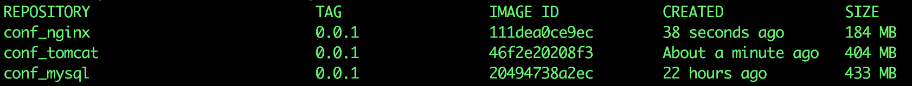
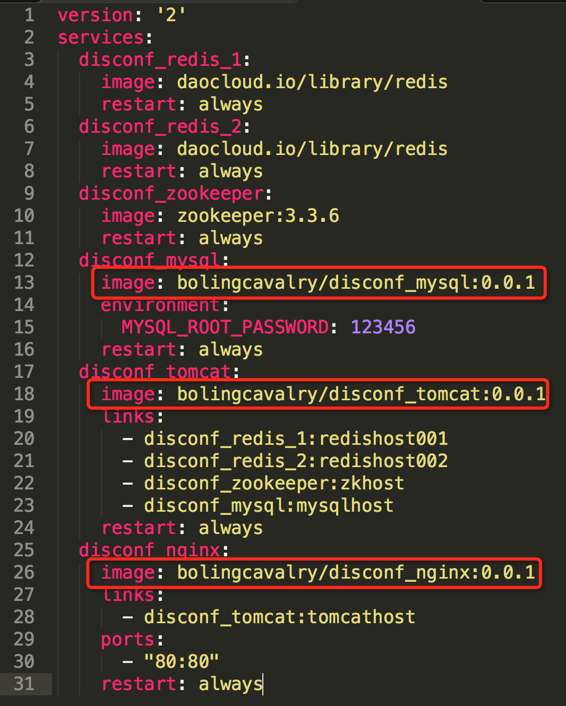
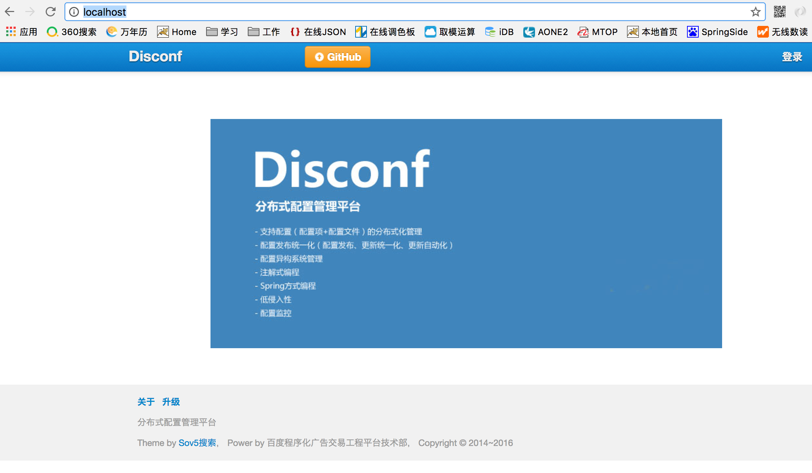
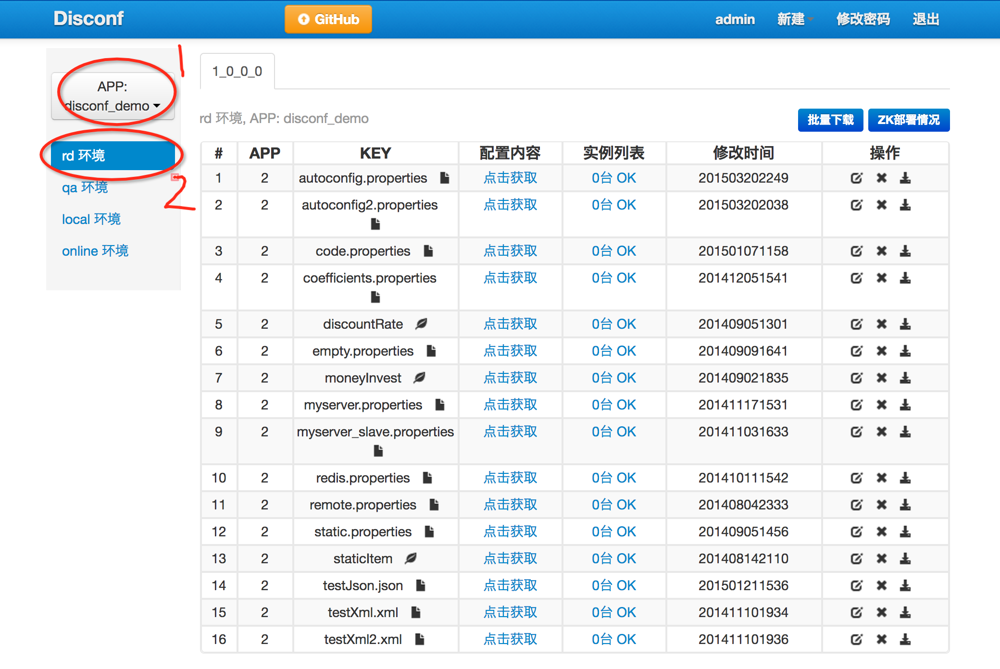

原文连接:https://www.cnblogs.com/bolingcavalry/p/11510238.html
Docker下的disconf实战全文链接
- 《Docker搭建disconf环境，三部曲之一：极速搭建disconf》；
- 《Docker搭建disconf环境，三部曲之二：本地快速构建disconf镜像》；
- 《Docker搭建disconf环境，三部曲之三：细说搭建过程》；
- 《Docker下使用disconf：极速体验》；
- 《Docker下使用disconf：细说demo开发》；
本地快速构建disconf镜像
在上一篇文章《Docker搭建disconf环境，三部曲之一：极速搭建disconf》中，我们用最快的速度在本地运行了disconf环境，对disconf有了初步的认识，用的是我预先构建好并上传的hub.docker.com上的镜像，今天我们试着在本地构建这些镜像，再把disconf环境运行起来，今天依然是以轻松的体验为主，详细的过程分析留给下一篇文章吧。
首先是从git上把制作镜像所需的文件全部取下来：
git clone git@github.com:zq2599/docker_disconf.git下载后，文件夹内容如下图：

mysql，nginx，tomcat三个文件夹内都有Dockerfile，也就是说我们需要构建三个镜像文件，对应着disconf环境中用到的mysql，nginx和tomcat，这三个server都有特殊配置，例如mysql要导入初始化数据，nginx要配置动静分离，tomcat要包含业务war包，所以这些镜像都要自己做，不能直接用hub.docker.com上的公共镜像。
开始构建镜像吧，打开终端进入tomcat目录，执行：
docker build -t conf_tomcat:0.0.1 .再进入nginx目录，执行：
docker build -t conf_nginx:0.0.1 .再进入mysql目录，执行：
docker build -t conf_mysql:0.0.1 .镜像构建完毕，执行docker images命令可以看到刚刚构件好的三个镜像，如下图：

打开docker_disconf文件夹下的docker-compose.yml文件，修改如下图红框中的三个位置的内容：

修改成这样：
- bolingcavalry/disconf_mysql:0.0.1改成conf_mysql:0.0.1
- bolingcavalry/disconf_tomcat:0.0.1改成conf_tomcat:0.0.1
- bolingcavalry/disconf_nginx:0.0.1改成conf_nginx:0.0.1
改动很简单，就是不用hub.docker.com上的镜像，而是用用我们刚才构建的镜像；
在docker-compose.yml文件所在的目录下，执行docker-compose up -d启动，执行完毕后打开浏览器输入"localhost"，就能看到如下效果：

点击右上角的登录，用户名密码都是admin，进去后可以看到一些默认的配置数据，如下图：

至此，本地disconf环境已经搭建完成，停止和删除整个环境的操作也很简单，还是在docker-compose.yml文件的目录下，
停止整个环境的命令：
docker-compose stop删除整个环境的命令：
docker-compose rm以上就是在本地构建disconf镜像并启动环境的全过程，体验以及结束了，接下来的文章我们一起分析Dockerfile和compose的制作细节，目标是定制最适合自己使用的disconf环境。
欢迎关注我的公众号